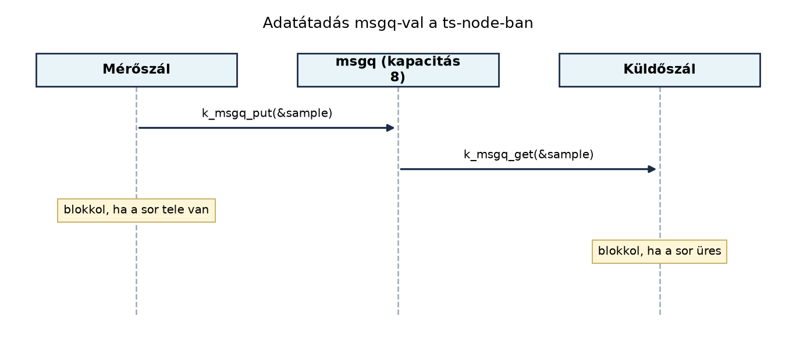

A TerraSense eszközén a szenzorok olvasása és a hálózati küldés
ritmusa eltér egymástól: a mérőszál másodpercenként mintát vesz, a
küldőszál viszont csak akkor tudja továbbítani az MQTT-üzenetet, ha a
rádió és a hálózati verem éppen elérhető. Ha a két tevékenység
ugyanabban a memóriában dolgozik, akkor adatverseny, elveszett frissítés
vagy részben kiírt rekord keletkezhet. A Zephyr – a pthread világához
hasonlóan, de beágyazott korlátokkal – szinkronizációs és üzenetátadási
primitíveket ad ehhez: mutexet, szemaforet, üzenetsort és work queue-t.
Ebben az alfejezetben ezeket a primitíveket a TerraSense mérési
rekordjának, a ts_sample struktúrának a továbbításán
keresztül mutatjuk be.
A ts-node szoftverében két szál fut együtt. Az egyik a
szenzorokat olvassa, a másik az MQTT-üzeneteket állítja össze és adja
fel. Ha közvetlenül egy globális struct ts_sample
változóban cserélnének adatot, akkor a küldőszál éppen akkor is
olvashatná a rekordot, amikor a mérőszál félig írta felül; ráadásul a
mérőszál többször is felülírhatná a mintát, mielőtt a küldőszál
elküldené. A megoldás: a mérőszál minden mintát egy üzenetsorba tesz, a
küldőszál pedig onnan veszi ki. Így a két szál ritmusa szétcsatolódik,
és a minta nem vész el addig, amíg a sor el nem telik.
Definíció. A mutex (mutual
exclusion) olyan szinkronizációs objektum, amely legfeljebb egy szálnak
adhatja meg a belépést egy kritikus szakaszba. A Zephyr
k_mutex típusa hasonlít a pthread_mutex_t-hez,
de nincs külön címtér, a verem mérete fordítási időben rögzített, és a
mutex tulajdonosa nem blokkolhatja magát végtelen ideig. A Zephyr mutex
prioritásöröklést alkalmaz: ha egy alacsony prioritású
szál tartja a mutexet, és egy magas prioritású szál vár rá, akkor az
alacsony prioritású szál átmenetileg megkapja a magasabb prioritást, így
elkerülhető a prioritásinverzió.
Definíció. A szemafor (semaphore)
számláló alapú szinkronizációs objektum. A k_sem_give()
növeli a számlálót, a k_sem_take() pedig csökkenti, ha a
számláló nagyobb nullánál; különben blokkol. A mutexszel ellentétben a
szemafornak nincs tulajdonosa, ezért alkalmas jelzésre (például „új
minta érkezett”), nem pedig erőforrás-védelemre. Bináris szemafor 0/1
értékkel egyszerű eseményjelzésre használható. A
k_sem_give() hívható ISR-ből, a k_sem_take()
viszont nem, mert blokkolhat.
Definíció. Az üzenetsor (message
queue, k_msgq) fix méretű elemeket tároló FIFO puffer. A
Zephyr üzenetsor a teljes üzenetet másolja, nem csak
mutatót ad át, ezért a termelő a saját veremben lévő rekordot a
k_msgq_put() után azonnal felülírhatja. A fogyasztó a
k_msgq_get() hívással másolatot kap. A k_msgq
kapacitása fordítási időben rögzített, a memóriája statikusan
foglalt.
Definíció. A work queue olyan szál,
amely elhalasztott munkákat hajt végre. A k_work objektum
egy függvényt és annak paraméterét írja le. A
k_work_submit() a rendszer work queue-jába teszi a munkát;
a work queue saját szálon, normál kontextusban futtatja a függvényt.
Mivel az ISR-ekben nem szabad blokkolni, a Zephyrben az ISR-ből
elhalasztott munka tipikus megoldása a work queue: az ISR csak
k_work_submit()-ot hív, a tényleges feldolgozás később,
szálkontextusban fut.
A következő diagram a mérőszál és a küldőszál közötti üzenetsoros adatátadást mutatja:

Az ábra nélkül is érthető: a mérőszál az üzenetsorba helyezi a mintát, a küldőszál pedig onnan veszi ki. Ha a sor tele van, a termelő blokkol (vagy időtúllépést kap); ha üres, a fogyasztó blokkol.
A négy primitív közötti választás a következő táblázat szerint történhet:
| Helyzet | Ajánlott primitív | Indoklás |
|---|---|---|
| Közös globális állapot (pl. szenzorkonfiguráció) védelme több szál között | mutex | tulajdonos, prioritásöröklés, kritikus szakasz |
| Esemény jelzése (pl. „új minta érkezett”) | szemafor (bináris) | ISR-ből adható, nincs tulajdonos |
| Erőforrás-készlet kezelése (pl. 4 db puffercella) | szemafor (számláló) | a számláló a szabad erőforrások számát jelzi |
| Mérési rekordok átadása termelő és fogyasztó szál között | üzenetsor (k_msgq) |
FIFO, másolás, fix méret, ISR-ből put lehetséges |
| Változó méretű adatok átadása (pl. soros keretek) | FIFO (k_fifo) |
mutató átadása, dinamikus elemek |
| ISR-ből elhalasztott, nem sürgős feldolgozás | work queue | normál szálkontextus, blokkolható |
A k_msgq előnye a k_fifo-val szemben, hogy
a teljes üzenetet másolja, így a termelőnek nem kell a puffert a
fogyasztó felszabadításáig életben tartania. Hátránya, hogy a kapacitás
és az elem mérete rögzített, és nagy üzeneteknél a másolás időt és
memóriát igényel.
A labor a TerraSense mérési rekordjának (ts_sample)
üzenetsoros továbbítását valósítja meg native_sim-en. A
mérőszál másodpercenként előállít egy mintát, a küldőszál kiveszi a
sorból és kiírja a konzolra.
Munkakönyvtár:
mkdir -p ~/iot-labor/i011 && cd ~/iot-labor/i011Hozzuk létre a projektfájlokat.
CMakeLists.txt:
cmake_minimum_required(VERSION 3.20)
find_package(Zephyr REQUIRED HINTS $ENV{ZEPHYR_BASE})
project(ts_sync)
target_sources(app PRIVATE src/main.c)prj.conf:
CONFIG_LOG=y
CONFIG_PRINTK=y
CONFIG_SHELL=nsrc/main.c:
#include <zephyr/kernel.h>
#include <zephyr/sys/printk.h>
#include <stdint.h>
#include <string.h>
/* Továbbvitt eredmény: a ts_sample struktúra az eszközszoftver-architektúra
* (i018) és a telemetria-séma (i032) fejezetben is használatos.
*/
struct ts_sample {
uint32_t seq;
int64_t ts_ms;
float temperature_c;
float humidity_rh;
float soil_moisture_pct;
};
/* 8 elemű msgq, elem mérete a ts_sample struktúra */
K_MSGQ_DEFINE(sample_msgq, sizeof(struct ts_sample), 8, 4);
static void producer_thread(void *p1, void *p2, void *p3)
{
struct ts_sample sample;
uint32_t seq = 0;
while (1) {
/* Emulált szenzorolvasás */
sample.seq = ++seq;
sample.ts_ms = k_uptime_get();
sample.temperature_c = 20.0f + (seq * 0.1f);
sample.humidity_rh = 60.0f - (seq * 0.05f);
sample.soil_moisture_pct = 30.0f + (seq * 0.2f);
printk("producer: seq=%u, ts=%lld\n", sample.seq, sample.ts_ms);
k_msgq_put(&sample_msgq, &sample, K_FOREVER);
k_sleep(K_MSEC(1000));
}
}
static void consumer_thread(void *p1, void *p2, void *p3)
{
struct ts_sample sample;
while (1) {
k_msgq_get(&sample_msgq, &sample, K_FOREVER);
printk("consumer: seq=%u, temp=%.1f C, hum=%.1f %%, soil=%.1f %%\n",
sample.seq, sample.temperature_c, sample.humidity_rh,
sample.soil_moisture_pct);
}
}
K_THREAD_DEFINE(producer_id, 1024, producer_thread, NULL, NULL, NULL, 5, 0, 0);
K_THREAD_DEFINE(consumer_id, 1024, consumer_thread, NULL, NULL, NULL, 6, 0, 0);
void main(void)
{
printk("ts-sync labor indult\n");
}A K_MSGQ_DEFINE makró statikusan létrehozza az
üzenetsort. A két szál prioritása eltér: a fogyasztóé magasabb (6), így
ha van feldolgozandó minta, azonnal lefut.
A build és a futtatás:
west build -b native_sim .
./build/zephyr/zephyr.exeVárható kimenet (részlet):
ts-sync labor indult
producer: seq=1, ts=1023
consumer: seq=1, temp=20.1 C, hum=59.9 %, soil=30.2 %
producer: seq=2, ts=2025
consumer: seq=2, temp=20.2 C, hum=59.9 %, soil=30.4 %A mérőszál másodpercenként termel, a küldőszál azonnal fogyaszt, mert a sor üres.
Továbbvitt eredmény. A ts_sample
struktúra és a sample_msgq üzenetsor a Eszközszoftver-architektúra: rétegek és
állapotgépek alfejezetben a rétegek közötti adatátadás alapja lesz,
a Adatformátumok: JSON, CBOR, Protocol Buffers,
SenML alfejezet pedig ebből a struktúrából készíti el a
telemetria-séma első változatát.
A labor működését a konzolnapló igazolja: minden
producer: sorhoz tartozik egy consumer: sor, a
seq értékek szigorúan növekvők. Ha a küldőszál lassabb, a
sor telik, de a K_FOREVER miatt a mérőszál blokkol, így
egyetlen minta sem vész el.
| Tünet | Lehetséges ok | Javítás |
|---|---|---|
| A consumer nem kap üzenetet | A K_MSGQ_DEFINE mérete nem egyezik a
sizeof(struct ts_sample) értékével |
Használjunk sizeof operátort, ne kézzel írt
konstansot |
k_msgq_put fordítási hibát ad |
A struktúra nem másolható (pl. rugalmas tömb tag) | Kerüljük a mutató tagokat, használjunk fix méretet |
| A producer blokkol | A sor tele van, mert a consumer nem fut | Ellenőrizzük a prioritásokat, adjunk timeoutot a
put-nak |
| A consumer blokkol | A sor üres, mert a producer nem termel | Ellenőrizzük, hogy a producer szál elindult-e |
k_msgq_put()
ugyan hívható ISR-ből, de csak K_NO_WAIT timeouttal. Ha egy
ISR K_FOREVER-t használ, és a sor tele van, a rendszer
lefagy. Az ISR-ből mindig K_NO_WAIT-et használjunk, és a
tényleges feldolgozást work queue-ba tegyük.k_msgq-ban. A
k_msgq másol, de ha a struktúra mutató tagot tartalmaz,
akkor a másolt mutató a termelő veremére mutat. A fogyasztó később
érvénytelen memóriát olvashat. Az üzenetsorba kerülő struktúrák ne
tartalmazzanak mutatót, vagy a mutató által címzett adatot is explicit
módon kezelni kell.k_msgq_get) alatt.Mikor használjunk mutexet és mikor szemaforet? Indokolja a választ a TerraSense példáján: a szenzorkonfiguráció írása és az „új minta érkezett” jelzés.
Tegyük fel, hogy a struct ts_sample mérete 28 bájt (32
bites native_sim-en, paddinggel). Hány bájt statikus
memóriát foglal a
K_MSGQ_DEFINE(sample_msgq, sizeof(struct ts_sample), 8, 4)
által létrehozott üzenetsor? Mi történik, ha 4 bájtos igazítású
rendszeren a struktúra mérete 24 bájt?
Bővítse a ts_sample struktúrát egy rssi
mezővel (int8_t), és módosítsa a mérőszálat, hogy az
rssi értéke -40 és -90 között
változzon. A küldőszál írja ki az rssi értékét is.
A küldőszál legyen lassabb, mint a mérőszál: a fogyasztó ciklusába
tegyen k_sleep(K_MSEC(2000)) hívást. Mit tapasztal? Hogyan
lehet a mérőszálat úgy módosítani, hogy ne blokkoljon végtelenül, hanem
100 ms után hagyja el a k_msgq_put hívást, és naplózza a
túlcsordulást?
A szenzorkonfiguráció írása kritikus szakasz: egyszerre csak egy szál
módosíthatja az értékeket, hogy ne keletkezzen félkész állapot. Itt
mutexet használunk, mert tulajdonost és prioritásöröklést ad. Az „új
minta érkezett” jelzés egy egyszerű esemény, amelyet a mérőszál
k_sem_give()-vel jelezhet a küldőszálnak; itt nincs szükség
tulajdonosra, elég a bináris szemafor.
A k_msgq puffere 8 * 28 = 224 bájt. Ha a
struktúra mérete 24 bájt, akkor a puffer 8 * 24 = 192 bájt.
A különbség a paddingből adódik; a foglalt memória mindig a
sizeof értékétől függ, ezért a kódban mindig
sizeof(struct ts_sample)-et adjunk meg, ne kézzel írt
számot.
A struktúra:
struct ts_sample {
uint32_t seq;
int64_t ts_ms;
float temperature_c;
float humidity_rh;
float soil_moisture_pct;
int8_t rssi;
};A mérőszálban:
sample.rssi = -40 - (seq % 50);A küldőszálban:
printk("consumer: seq=%u, temp=%.1f C, hum=%.1f %%, soil=%.1f %%, rssi=%d\n",
sample.seq, sample.temperature_c, sample.humidity_rh,
sample.soil_moisture_pct, sample.rssi);Ha a fogyasztó lassabb, a sor előbb-utóbb megtelik. A mérőszál a
K_FOREVER timeout miatt addig blokkol, amíg a fogyasztó ki
nem vesz egy elemet. A túlcsordulás elkerülésére a
k_msgq_put hívást K_MSEC(100) timeouttal
hívjuk:
int ret = k_msgq_put(&sample_msgq, &sample, K_MSEC(100));
if (ret == -EAGAIN) {
printk("producer: msgq tele, minta eldobva\n");
}Ekkor a mérőszál nem blokkol végtelenül, hanem 100 ms után feladja a küldést, és naplózza a túlcsordulást. A minta elvesztése itt tudatos döntés; a későbbi Store-and-forward: offline működés és visszatöltés alfejezetben megvizsgáljuk, hogyan lehet ezt elkerülni.
A Zephyr szinkronizációs és kommunikációs primitívjei közül a mutex a
kritikus szakaszok védelmére, a szemafor az eseményjelzésre, az
üzenetsor (k_msgq) a fix méretű rekordok másolásos
átadására, a work queue pedig az ISR-ből elhalasztott munkára való. A
laborban definiáltuk a ts_sample struktúrát
(seq, ts_ms, hőmérséklet, páratartalom,
talajnedvesség), és egy sample_msgq üzenetsorral átadtuk a
mérést a mérőszálból a küldőszálba. A ts_sample struktúra
és az üzenetsoros átadás a továbbvitt eredmény: az Eszközszoftver-architektúra: rétegek és
állapotgépek alfejezet ezt használja a rétegek közötti
kommunikációhoz, az Adatformátumok: JSON, CBOR,
Protocol Buffers, SenML alfejezet pedig ebből készíti a
telemetria-sémát. A laborfájlok:
~/iot-labor/i011/CMakeLists.txt,
~/iot-labor/i011/prj.conf,
~/iot-labor/i011/src/main.c.
A Zephyr kernel API-k (k_msgq, k_sem,
k_mutex, k_work) nevei és a
native_sim build menete a Zephyr hivatalos
dokumentációjából származnak, de a konkrét verziószámot és a
Kconfig opciókat a telepített Zephyr-változatban
ellenőrizni kell. A ts_sample struktúra mérete
illusztratív, függ a célplatform ABI-jától és a paddingtől.